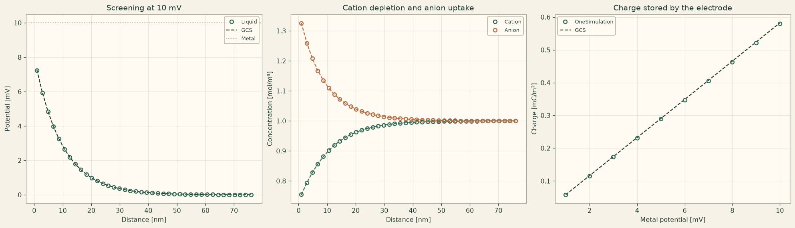

Docs › Examples › Charge stored by a blocking electrode
Electrochemistry · 1D
Charge stored by a blocking electrode
A charged metal surface attracts anions from a dilute electrolyte. Follow the nanometre-scale concentration profiles and the surface charge as the bias increases from 1 to 10 mV.
Run locally with OneSimulation. The example downloads are free. Running them requires an activated runtime. OneSimulation 1.0 · CPython 3.13 on macOS (Apple Silicon), Ubuntu 22.04 (x86-64), and Windows x64. Installation and activation · View pilot plans. Scope of the reference checks.


What it computes
OneSimulation evolves the two ion species on a line with Scharfetter–Gummel finite volumes and a compact Stern layer at each blocking electrode. Opposite metal potentials set the grounded bulk plane at the midpoint; an inventory adjustment sets its salt concentration.
What it checks
Refining from 80 to 160 finite volumes changes the 10 mV charge from 0.57993 to 0.58172 mC/m². Over ten biases the fine-grid wall charge agrees with Gouy–Chapman–Stern theory within 0.11 %. The midpoint salt concentration stays within 0.000003 mol/m³ of the bulk target.
The notebook
The complete notebook, cell by cell. Run it to produce the figures and the comparison printout.
A positively biased metal repels cations and attracts anions. How much charge accumulates when its potential rises from 1 to 10 mV? The one-dimensional Poisson–Nernst–Planck model includes diffusion, electrical migration and a charge-free compact layer at the electrode. Both ions are blocked at the metal.
The solvent is water at 25 °C. The bulk contains 1 mol/m³ of each monovalent ion (1 mM). The compact layer is 0.3 nm thick, with a relative permittivity of 10. Its potential drop is \(\sigma/C_S\), where \(C_S=\epsilon_S/d_S\).
import numpy as np
from onesim.cad.d1 import Line
from onesim.meshing import cartesian
from onesim.numerics import Numerics
from onesim.numerics.linear import GMRES, SparseDirect
from onesim.numerics.nonlinear import Newton
from onesim.numerics.time import BDF, BackwardEuler
from onesim.physics.chemistry import (
PoissonNernstPlanck,
ScharfetterGummelFiniteVolume,
SternLayer,
TransportSpecies,
)
from onesim.simulation import Problem, Simulation
from onesim.simulation.initial_conditions import InitialValue
from onesim.visualization import plots, theme
from scipy.constants import epsilon_0
from scipy.optimize import brentq
theme.set()
faraday, gas_constant, temperature = 96485.33212, 8.314462618, 298.15
bulk, diffusivity = 1.0, 1e-9
epsilon, capacitance = 78.5 * epsilon_0, 10 * epsilon_0 / 0.3e-9
thermal = gas_constant * temperature / faraday
debye = np.sqrt(epsilon * thermal / (2 * faraday * bulk))
stern = epsilon / capacitance
half_length = 8 * debye
line = Line(start=(0, 0, 0), end=(2 * half_length, 0, 0))
numerics = Numerics(
spatial=ScharfetterGummelFiniteVolume(linear_solver=SparseDirect()),
time_integrator=BDF(order=2, startup=BackwardEuler()),
nonlinear_solver=Newton(
linear_solver=GMRES(relative_tolerance=1e-7, restart=220, maximum_iterations=650),
absolute_tolerance=1e-8,
),
)Establish the bulk and sweep the metal potential
Two identical electrodes at \(+V\) and \(-V\) place the zero of potential at the cell midpoint by symmetry. Here both ion concentrations are equal. For each voltage, a first charging run measures the small amount of salt removed from the middle. A second run adds this amount to the initial inventory to recover the specified bulk concentration. Only the positive half-cell is plotted.
Each run starts from a uniform electrolyte. The zero-flux blocking walls conserve each ion separately. The compact-layer Robin condition uses the effective thickness \(\epsilon/C_S\) in the solvent permittivity convention.
bias = np.arange(1, 11) * 1e-3
species = (TransportSpecies("cation", diffusivity), TransportSpecies("anion", diffusivity))
tau = debye**2 / diffusivity
def equilibrium(voltage, mesh, cells):
half = cells // 2
walls = (
SternLayer(potential=voltage, thickness=stern),
SternLayer(potential=-voltage, thickness=stern),
)
model = PoissonNernstPlanck(
domain=line.line,
species=species,
charge_numbers=(1, -1),
temperature=temperature,
permittivity=epsilon,
potential_boundaries=(walls,),
)
start = bulk
for _ in range(2):
initial = tuple(InitialValue(model.concentration(ion.species_id), start) for ion in species)
problem = Problem(
name="Blocking electrodes", geometry=line, physics=(model,), initial_conditions=initial
)
result = Simulation(problem=problem, mesh=mesh, numerics=numerics).run(
start_time=0, end_time=256 * tau, time_step=4 * tau
)
cp, cm = (
np.asarray(result.field(model.concentration(ion.species_id)).values) for ion in species
)
measured = 0.5 * (cp[half - 1] + cp[half])
start += bulk - measured
field = result.field(model.electric_potential)
phi = np.asarray(field.values)
x = np.asarray(field.space.dof_coordinates)[:half, 0]
width = 2 * half_length / cells
charge = epsilon * (voltage - phi[0]) / (stern + width / 2)
ionic_charge = -faraday * width * np.sum(cp[:half] - cm[:half])
residual = np.max(np.abs(phi - np.asarray(field.at(224 * tau).values)))
return charge, ionic_charge, measured, residual, x, phi, cp, cm
def line_mesh(cells):
return cartesian(shape=(cells,), extents=(2 * half_length,), geometry=line, periodic=False).build()
coarse_cells, fine_cells = 80, 160
coarse_mesh, mesh = line_mesh(coarse_cells), line_mesh(fine_cells)
coarse_charge = equilibrium(bias[-1], coarse_mesh, coarse_cells)[0]
charge, charge_from_ions, centre, drift = [], [], [], []
half = fine_cells // 2
for voltage in bias:
sigma, ions, measured, residual, x, phi, cp, cm = equilibrium(voltage, mesh, fine_cells)
charge.append(sigma)
charge_from_ions.append(ions)
centre.append(measured)
drift.append(residual)
print(f"Refinement from {coarse_cells} to {len(phi)} potential cells: charge at 10 mV changes from {1000 * coarse_charge:.5f} to {1000 * charge[-1]:.5f} mC/m²")Compare against Gouy–Chapman–Stern theory
In an unbounded reservoir the surface charge is \(\sigma=2\epsilon V_T\sinh(\phi_d/(2V_T))/\lambda_D\) and \(V=\phi_d+\sigma/C_S\). Solving this scalar relation gives the independent reference. At low voltage the capacitance tends to \(\epsilon/(\lambda_D+\epsilon/C_S)\). Reference: O. Stern, Zur Theorie der elektrolytischen Doppelschicht (1924); A. J. Bard and L. R. Faulkner, Electrochemical Methods, 2nd ed. (2001).
gouy = lambda v: 2 * epsilon * thermal / debye * np.sinh(v / (2 * thermal))
surface = np.array(
[brentq(lambda v: v + gouy(v) / capacitance - applied, 0, applied) for applied in bias]
)
theory = gouy(surface)
exact_phi = 4 * thermal * np.arctanh(np.tanh(surface[-1] / (4 * thermal)) * np.exp(-x / debye))
print(
f"Debye length {debye*1e9:.2f} nm. Largest bulk concentration error: {np.max(np.abs(np.array(centre)-bulk)):.2g} mol/m³."
)
print(
f"Wall charge at 10 mV: {1000*charge[-1]:.4f} mC/m². Largest relative error over all ten biases: {max(abs(charge/theory-1)):.2%}."
)
print(
f"Half-cell ionic charge differs from wall charge by at most {max(abs(np.array(charge_from_ions)/charge-1)):.2%}; the finite midpoint also carries electric displacement."
)
print(f"Maximum potential change during the final 32 Debye times: {max(drift)*1e6:.3f} µV.")Profiles at 10 mV and the charging curve
Charge in the compact layer lowers the potential at the first accessible point of the liquid. Both concentrations approach the bulk level several Debye lengths away.
fig = plots.figure(1, 3, size=(17, 4.8))
plots.line(
points={"Liquid": (x * 1e9, phi[:half] * 1e3)},
reference={"GCS": (x * 1e9, exact_phi * 1e3)},
hlines={"Metal": 10},
xlabel="Distance [nm]",
ylabel="Potential [mV]",
title="Screening at 10 mV",
legend="upper right",
ax=fig[0],
)
plots.line(
points={"Cation": (x * 1e9, cp[:half]), "Anion": (x * 1e9, cm[:half])},
reference={
"Cation": (x * 1e9, bulk * np.exp(-exact_phi / thermal)),
"Anion": (x * 1e9, bulk * np.exp(exact_phi / thermal)),
},
xlabel="Distance [nm]",
ylabel="Concentration [mol/m³]",
title="Cation depletion and anion uptake",
legend="upper right",
ax=fig[1],
)
plots.line(
points={"OneSimulation": (bias * 1e3, 1e3 * np.array(charge))},
reference={"GCS": (bias * 1e3, 1e3 * theory)},
xlabel="Metal potential [mV]",
ylabel="Charge [mC/m²]",
title="Charge stored by the electrode",
legend="upper left",
ax=fig[2],
)
plots.show()